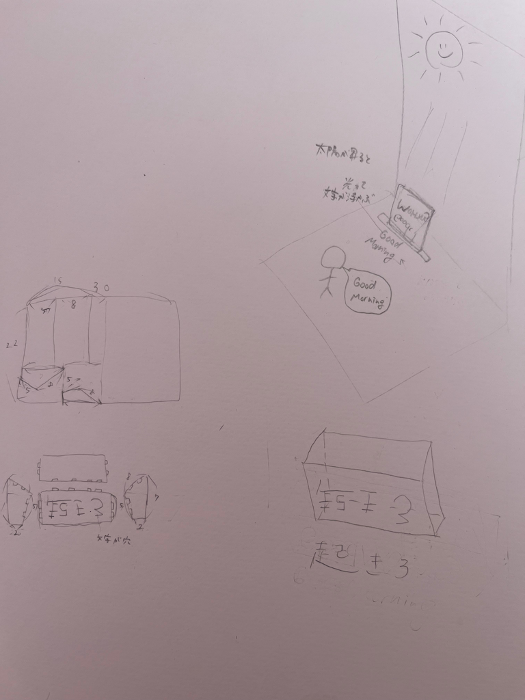

構想段階でのスケッチ

この作品を作ろうという思いに至るまで
レーザーカッティングと光を組み合わせたインテリアとしての作品をたくさん見て、自分も作ってみたいと思いました。
また、インテリアとしてだけでなくより実用的な物を作ってみたいと考え、朝が弱い人のために太陽が喝を入れてくれる装置を作りました。
感想
今回レーザーカッティングを使った製作を通して、最初は平面の材料からどのようなものが作れるのか想像しにくかったのですが、デザインを工夫することで平面でもさまざまな形や表現ができることを知りました。
実際に加工してみると、細かい部分まで正確に切り出すことができ、手作業では難しい表現が可能になる点が印象に残りました。また、平面の組み合わせによって立体的な表現にもつながることを学び、ものづくりの可能性の広がりを感じました。
今回の授業を通して、レーザーカッティングの技術と発想次第で作品の幅が大きく広がることを実感し、今後の制作にも生かしていきたいと思います。